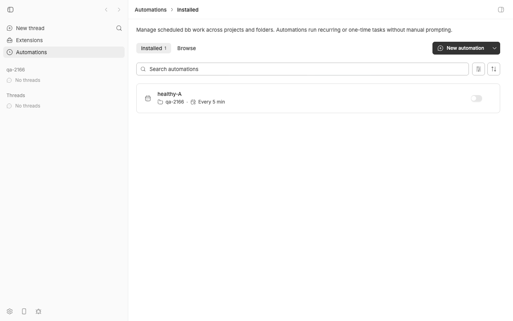
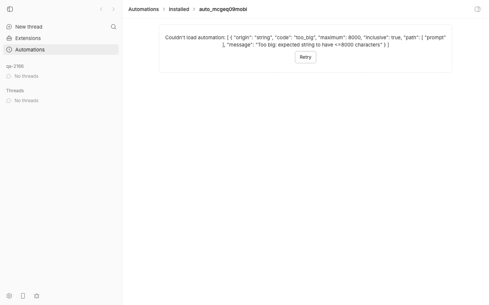

#2166 · automation update writes an over-cap prompt despite rejecting it, then no read of that project's automations succeeds
Verdict: REPRODUCED · Root-cause confidence: high
1. TL;DR
Running bb automation update <id> --prompt "<more than 8000 characters>" prints a Zod too_big rejection and exits 1, but the new prompt is already in the database by the time the error is produced. The same is true for bb automation create. From then on bb automation show <id>, bb automation list --project … (which hides every other automation in the project), the app's automation detail page, and any repairing bb automation update all fail with the identical too_big error, so the only way out is a manual SQLite edit.
The mechanism: the bb automation CLI handler builds the request object by hand and calls the plugin service directly, never running it through the Zod request schema that the RPC route (used by the web app) applies. The service writes the row, and only then serializes it for the response using automationExecutionSchema, which carries the same .max(8000) cap. That cap is also used to parse every stored row on every read, so a single over-cap row poisons list, show and update. One claim in the issue is wrong: the corrupted automation does not keep running on schedule; the scheduler parses the stored row with the same schema, logs Skipping due automation … with invalid stored configuration every 10 s, and never advances it.
2. Claims vs findings
| Claim from the issue | Status | Evidence |
|---|---|---|
bb automation update … --prompt (8039 chars) returns the too_big validation error and writes the row anyway | Verified | Live repro step 3: CLI exits 1 with the Zod issue array; sqlite3 shows prompt_len 19 → 8039 for the victim row. Unit test rejects the update without persisting it fails on main with expected 8039 to be 19. |
bb automation show <id> on the affected row fails with the same error | Verified | Live repro step 4, exit 1 with the identical issue array. App detail page shows Couldn't load automation: … too_big (screenshot). |
bb automation list --project fails for the whole project, hiding healthy automations | Verified | Live repro step 4: list exits 1 and prints nothing about healthy-A. service.list maps every row through the parser with no per-row catch (service.ts#L430-L435). |
bb automation show on another id in the same project still works (fault is per-row) | Verified | Live repro step 4: show auto_yhtjhct4oum exits 0. |
A repairing update with a shorter prompt fails with the same error and changes nothing | Verified | Live repro step 5: exit 1, prompt_len still 8039. service.update calls parseAutomationExecution(current.execution) before writing (service.ts#L562). |
Direct SQLite rewrite of execution.prompt restores everything without a restart | Verified | Reads parse the row fresh on every call; the repro's recovers an already-corrupted row test seeds/fixes the row via SQL and the prototype fix confirms no caching is involved. |
| "The automation keeps running on schedule throughout, so nothing surfaces the broken state" | Refuted | The sweep parses the stored execution with the same schema and bails: sweep.ts#L69-L87. Live: server log prints ERROR … Skipping due automation auto_mcgeq09mobi with invalid stored configuration every 10 s after the due time, run_count stays 0, automation_runs stays empty, next_run_at never advances (repro/sweep-skip.log). Unit test claim check: the scheduler SKIPS passes on main. The scheduler code is byte-identical between desktop-v0.39.0 and the base commit. What is true: the app's overview (automations_overview) silently drops the row with only a WARN log, so the UI shows no trace of it. |
| The cap is used in three places in the bundle (agent execution schema, agent update schema, response schema) | Verified | rpc-types.ts#L125, #L210, and the response/stored schema reuses the first (#L186-L191). It is also the schema used to parse every stored row (data.ts#L260-L264). |
"the request-side schemas carry the same .max(), so I would have expected the update to be rejected before persisting" (reporter could not explain the write) | Explained | Request-side schemas are only applied by the RPC dispatcher (plugin-service.ts#L2027-L2040). The CLI handler never parses its hand-built request (cli.ts#L548-L595, #L868). The same payload through the RPC route is rejected with HTTP 400 and the row is untouched (repro/rpc-contrast.log). |
| Versions: bb 0.39.0 | Verified | Base commit is 0.39.0 (pnpm bb:dev --version → 0.39.0). git diff desktop-v0.39.0..fcada5a3b -- plugins/automations contains only SQL column-list refactors; no behaviour change. Nothing newer on origin/main touches the plugin. |
3. Environment
- bb
fcada5a3b88302acb9944aa74b11db4ecaa215a0(main, 2026-08-21; reports as 0.39.0),origin/mainhas no later commits underplugins/automationsor the plugin host - macOS 26.5.2 (25F84), arm64; Node v22.23.1; codex-cli 0.149.0 (provider never actually invoked; the affected automations were paused/skipped)
- Isolated dev instance from
scripts/bb-dev-app current: Apphttp://localhost:17399, Serverhttp://localhost:25399, Host daemon127.0.0.1:33399, data dir~/.bb-dev/bb-machines-bee.getbb.app-checkouts-bb-.claude-worktrees-wf_21e66a79-f02-2-08c5b3ffbf63(deleted at cleanup) - Scratch project
qa-2166(proj_avnv4kc427) on local hosthost_nkt2g9f5h8, repo/tmp/bb-2166-qa-repo - Plugin DB:
<data dir>/plugins/automations/data.db, tableautomations, columnexecution(JSON)
4. Minimal reproduction
Unit-level (fastest, no running app): drop repro/issue-2166.test.ts into plugins/automations/src/ and run pnpm exec vitest run src/issue-2166.test.ts from plugins/automations. On main the two tests that assert the desired behaviour fail, the test that asserts the buggy behaviour passes, and the scheduler claim check passes (the scheduler skips the row). Full output: repro/vitest-main.log.
RUN v4.1.1 /Users/sawyerhood/.bb-machines/bee.getbb.app/checkouts/bb/.claude/worktrees/wf_21e66a79-f02-2/plugins/automations
❯ src/issue-2166.test.ts (4 tests | 2 failed) 30ms
× rejects the update without persisting it (BUG: row is written) 21ms
× keeps list/show/update working for the project after a rejected update (BUG: all fail) 3ms
⎯⎯⎯⎯⎯⎯⎯ Failed Tests 2 ⎯⎯⎯⎯⎯⎯⎯
FAIL src/issue-2166.test.ts > issue #2166: over-cap prompt update > rejects the update without persisting it (BUG: row is written)
AssertionError: expected 8039 to be 19 // Object.is equality
- Expected
+ Received
- 19
+ 8039
❯ src/issue-2166.test.ts:166:36
164| // ... but the row was written anyway. BUG: this assertion fails o…
165| // (stored length is 8039, not 19).
166| expect(storedPromptLength(id)).toBe("Reply only with ok.".length);
| ^
167| });
168|
⎯⎯⎯⎯⎯⎯⎯⎯⎯⎯⎯⎯⎯⎯⎯⎯⎯⎯⎯⎯⎯⎯⎯⎯[1/2]⎯
FAIL src/issue-2166.test.ts > issue #2166: over-cap prompt update > keeps list/show/update working for the project after a rejected update (BUG: all fail)
AssertionError: [
{
"origin": "string",
"code": "too_big",
"maximum": 8000,
"inclusive": true,
"path": [
"prompt"
],
"message": "Too big: expected string to have <=8000 characters"
}
]
: expected 1 to be +0 // Object.is equality
- Expected
+ Received
- 0
+ 1
❯ src/issue-2166.test.ts:179:40
177| // `bb automation list --project proj_test` takes the healthy row …
178| const list = await cli.run(["list", "--project", "proj_test"], ctx…
179| expect(list.exitCode, list.stderr).toBe(0); // BUG: exit 1, too_big
| ^
180| expect(list.stdout).toContain(healthyId);
181|
⎯⎯⎯⎯⎯⎯⎯⎯⎯⎯⎯⎯⎯⎯⎯⎯⎯⎯⎯⎯⎯⎯⎯⎯[2/2]⎯
Test Files 1 failed (1)
Tests 2 failed | 2 passed (4)
Start at 08:11:46
Duration 211ms (transform 65ms, setup 0ms, import 116ms, tests 30ms, environment 0ms)
Live, against a dev instance (repro/live-repro.sh, full log repro/live-cli.log). $PROJ is a project id; DATA_DIR is the instance data dir.
- Create two healthy agent automations in one project.
$ pnpm bb:dev automation create --project proj_avnv4kc427 --name healthy-A --cron */5 * * * * --timezone UTC --prompt Reply only with ok. --provider codex --model gpt-5 Automation created: auto_yhtjhct4oum ID: auto_yhtjhct4oum Name: healthy-A Enabled: yes Mode: agent Schedule: */5 * * * * (UTC) Next run: 8/21/2026, 8:15:00 AM Last run: - Runs: 0 Origin: agent [exit 0] $ pnpm bb:dev automation create --project proj_avnv4kc427 --name victim-B --cron */5 * * * * --timezone UTC --prompt Reply only with ok. --provider codex --model gpt-5 Automation created: auto_mcgeq09mobi ID: auto_mcgeq09mobi Name: victim-B Enabled: yes Mode: agent Schedule: */5 * * * * (UTC) Next run: 8/21/2026, 8:15:00 AM Last run: - Runs: 0 Origin: agent [exit 0]
- Confirm both list fine and both store a 19-char prompt.
$ pnpm bb:dev automation list --project proj_avnv4kc427 ID Name On Schedule Next run Runs Origin auto_mcgeq09mobi victim-B yes */5 * * * * (UTC) 8/21/2026, 8:15:00 AM 0 agent auto_yhtjhct4oum healthy-A yes */5 * * * * (UTC) 8/21/2026, 8:15:00 AM 0 agent [exit 0] $ sqlite3 /Users/sawyerhood/.bb-dev/bb-machines-bee.getbb.app-checkouts-bb-.claude-worktrees-wf_21e66a79-f02-2-08c5b3ffbf63/plugins/automations/data.db select id, name, length(execution) as execution_len, length(json_extract(execution,'$.prompt')) as prompt_len from automations where project_id='proj_avnv4kc427'; auto_yhtjhct4oum|healthy-A|149|19 auto_mcgeq09mobi|victim-B|149|19 [exit 0]
- Update
victim-Bwith an 8039-character prompt. Expected: rejected, nothing written. Actual: rejected and written (prompt_len19 → 8039,updated_atbumped).prompt length: 8039 $ pnpm bb:dev automation update auto_mcgeq09mobi --project proj_avnv4kc427 --prompt x…(8039 × x)…x [ { "origin": "string", "code": "too_big", "maximum": 8000, "inclusive": true, "path": [ "prompt" ], "message": "Too big: expected string to have <=8000 characters" } ] ELIFECYCLE Command failed with exit code 1. [exit 1] $ sqlite3 /Users/sawyerhood/.bb-dev/bb-machines-bee.getbb.app-checkouts-bb-.claude-worktrees-wf_21e66a79-f02-2-08c5b3ffbf63/plugins/automations/data.db select id, name, length(execution) as execution_len, length(json_extract(execution,'$.prompt')) as prompt_len, updated_at from automations where project_id='proj_avnv4kc427'; auto_yhtjhct4oum|healthy-A|149|19|1787325183047 auto_mcgeq09mobi|victim-B|8169|8039|1787325189737 [exit 0] - Every read of that row, and the whole-project
list, now fail.showof the untouchedhealthy-Astill works. Expected: list shows both rows. Actual:$ pnpm bb:dev automation show auto_mcgeq09mobi --project proj_avnv4kc427 [ { "origin": "string", "code": "too_big", "maximum": 8000, "inclusive": true, "path": [ "prompt" ], "message": "Too big: expected string to have <=8000 characters" } ] ELIFECYCLE Command failed with exit code 1. [exit 1] $ pnpm bb:dev automation list --project proj_avnv4kc427 [ { "origin": "string", "code": "too_big", "maximum": 8000, "inclusive": true, "path": [ "prompt" ], "message": "Too big: expected string to have <=8000 characters" } ] ELIFECYCLE Command failed with exit code 1. [exit 1] $ pnpm bb:dev automation show auto_yhtjhct4oum --project proj_avnv4kc427 ID: auto_yhtjhct4oum Name: healthy-A Enabled: yes Mode: agent Schedule: */5 * * * * (UTC) Next run: 8/21/2026, 8:15:00 AM Last run: - Runs: 0 Origin: agent [exit 0] - Recovery is locked out: a valid short prompt gets the same error and the row is unchanged.
$ pnpm bb:dev automation update auto_mcgeq09mobi --project proj_avnv4kc427 --prompt short again [ { "origin": "string", "code": "too_big", "maximum": 8000, "inclusive": true, "path": [ "prompt" ], "message": "Too big: expected string to have <=8000 characters" } ] ELIFECYCLE Command failed with exit code 1. [exit 1] $ sqlite3 /Users/sawyerhood/.bb-dev/bb-machines-bee.getbb.app-checkouts-bb-.claude-worktrees-wf_21e66a79-f02-2-08c5b3ffbf63/plugins/automations/data.db select id, length(json_extract(execution,'$.prompt')) as prompt_len from automations where id='auto_mcgeq09mobi'; auto_mcgeq09mobi|8039 [exit 0] - The scheduler never runs it (contradicts the issue): no runs,
run_count0,next_run_atstuck at the first due time, and the server log repeats the skip every sweep (10 s).$ pnpm bb:dev automation runs auto_mcgeq09mobi --project proj_avnv4kc427 No runs found [exit 0]
225:@bb/server:dev: [08:15:05] ERROR: [server] [plugin:automations] Skipping due automation auto_mcgeq09mobi with invalid stored configuration: [ 226-@bb/server:dev: { 227-@bb/server:dev: "origin": "string", 228-@bb/server:dev: "code": "too_big", 229-@bb/server:dev: "maximum": 8000, 230-@bb/server:dev: "inclusive": true, 231-@bb/server:dev: "path": [ 232-@bb/server:dev: "prompt" 233-@bb/server:dev: ], 234-@bb/server:dev: "message": "Too big: expected string to have <=8000 characters" 235-@bb/server:dev: } 236-@bb/server:dev: ] 237:@bb/server:dev: [08:15:15] ERROR: [server] [plugin:automations] Skipping due automation auto_mcgeq09mobi with invalid stored configuration: [ 238-@bb/server:dev: { 239-@bb/server:dev: "origin": "string", 240-@bb/server:dev: "code": "too_big", auto_yhtjhct4oum|healthy-A|0|0|| auto_mcgeq09mobi|victim-B|1|0|2026-08-21 15:15:00| 0 Fri Aug 21 15:15:36 UTC 2026 - Same defect on
create(repro/live-create.sh): the row is inserted, then the response serializer rejects it.$ sqlite3 /Users/sawyerhood/.bb-dev/bb-machines-bee.getbb.app-checkouts-bb-.claude-worktrees-wf_21e66a79-f02-2-08c5b3ffbf63/plugins/automations/data.db select count(*) as rows_before from automations where project_id='proj_avnv4kc427'; 2 [exit 0] $ pnpm bb:dev automation create --project proj_avnv4kc427 --name created-over-cap --cron */5 * * * * --timezone UTC --prompt z…(8039 × z)…z --provider codex --model gpt-5 [ { "origin": "string", "code": "too_big", "maximum": 8000, "inclusive": true, "path": [ "prompt" ], "message": "Too big: expected string to have <=8000 characters" } ] ELIFECYCLE Command failed with exit code 1. [exit 1] $ sqlite3 /Users/sawyerhood/.bb-dev/bb-machines-bee.getbb.app-checkouts-bb-.claude-worktrees-wf_21e66a79-f02-2-08c5b3ffbf63/plugins/automations/data.db select id, name, length(json_extract(execution,'$.prompt')) as prompt_len from automations where project_id='proj_avnv4kc427' order by created_at; auto_yhtjhct4oum|healthy-A|19 auto_mcgeq09mobi|victim-B|8039 auto_yfbp1u951ks|created-over-cap|8039 [exit 0] - Contrast: the same over-cap update via the RPC route the web app uses is rejected before the handler runs (HTTP 400,
invalid_input) and the row is untouched (repro/rpc-contrast.sh).$ curl -s -X POST $BB_SERVER_URL/api/v1/plugins/automations/rpc/automations_update -H 'content-type: application/json' -d '{"projectId":"proj_avnv4kc427","automationId":"auto_yhtjhct4oum","agent":{"prompt":"<8039 chars>"}}' HTTP 400 {"ok":false,"error":{"code":"invalid_input","message":"rpc input validation failed","issues":[{"message":"Too big: expected string to have <=8000 characters","path":["agent","prompt"]}]}} $ sqlite3 data.db "select id, length(json_extract(execution,'$.prompt')) from automations where id='auto_yhtjhct4oum';" auto_yhtjhct4oum|19

healthy-A is listed; victim-B has vanished without any error (the overview RPC drops malformed rows with a server-side WARN only). The toggle is off because I paused healthy-A to avoid a real provider run.
victim-B (/plugins/automations/automations/<project>/<id>): Couldn't load automation: … "code": "too_big" …. The RPC automations_get returns HTTP 500.Repro files: 2166/repro/
5. Root cause
Three things combine. The first is the defect; the second and third turn it from a one-row glitch into a project-wide, self-locking failure.
5a. The CLI path skips request validation and writes before it serializes
bb automation … is routed by the server to the plugin's registered CLI (registration.run(argv, ctx), plugin-service.ts#L2089-L2096). Inside the plugin, buildAgentExecutionUpdate copies the --prompt string straight into a TypeScript-typed object and buildUpdateRequest hands it to service.update with no Zod parse anywhere (cli.ts#L525, #L548-L595, #L868). By contrast the RPC dispatcher validates updateAutomationInputSchema before invoking the handler (plugin-service.ts#L2027-L2040), which is why the web app cannot trigger this.
service.update then merges the patch and writes it with updateAutomation (service.ts#L610-L616), which just JSON.stringifys the execution (data.ts#L397-L441). Only on the last line does it build the response via toStoredAutomationResponse (service.ts#L645) → toAutomationResponse → parseAutomationExecution, which runs automationExecutionSchema.parse (data.ts#L260-L264). That schema carries prompt: z.string().min(1).max(AUTOMATION_PROMPT_MAX_LENGTH) (rpc-types.ts#L122-L132), so the parse throws a ZodError whose .message is the JSON issue array the user sees. The CLI's catch-all turns it into exitCode 1 (cli.ts#L974-L979). The UPDATE has already committed. service.create has the identical shape (write at service.ts#L530-L552, serialize last), so bb automation create --prompt <over-cap> inserts a poisoned row too (step 7).
// plugins/automations/src/cli.ts (base commit)
const update: AgentExecutionUpdate = {};
if (args.flags.has("prompt")) update.prompt = requireFlag(args, "prompt"); // L525 — no schema parse
...
return { request, ...(scriptSource ? { scriptSource } : {}) }; // L594 — still no parse
...
const updated = await service.update(request); // L868
// plugins/automations/src/service.ts
updated = updateAutomation(db, { ..., patch }); // L612 — row committed here
...
return toStoredAutomationResponse(pluginDataDir, updated); // L645 — throws too_big here
5b. The same capped schema is used to parse stored rows, on every read
parseAutomationExecution is the single decoder for the execution column, and it is the request-policy schema with .max(8000). A cap is a policy about what a client may send; applying it to what the store already contains means any row that violates it (whatever the reason: this bug, a future cap reduction, a legacy import) becomes unreadable. Every read goes through it: get (service.ts#L436-L441), list, executionOptions, run, the sweep, and, critically, the pre-write read in update (service.ts#L562), which is what locks out the repair.
5c. list has no per-row tolerance, unlike overview
service.list is a bare rows.map(toStoredAutomationResponse) (service.ts#L430-L435), so one bad row throws for the whole project. The cross-project overview used by the app already wraps each row in a try/catch and logs a warning (service.ts#L400-L428), which is why the app overview silently drops the row instead of erroring; the two paths are inconsistent.
Secondary observations
- The CLI's own request shape already diverges from the RPC contract: for
--script-fileit sends bothscript(content) andscriptFile(path), whichautomationExecutionRequestSchema'srequireExactlyOneScriptSourcerefine would reject (cli.ts#L487-L497 vs rpc-types.ts#L160-L178). So a blanketupdateAutomationInputSchema.parse()in the CLI breaks--script-file(I tried it; three existing tests fail). The fix has to validate the agent branch specifically or move the policy check into the service. - The inline
--scriptcap (AUTOMATION_SCRIPT_MAX_LENGTH= 262144) is in the same stored schema and has the same failure mode for script automations. - The scheduler's skip is logged at ERROR level every 10 s for as long as the row exists (the due automation is never claimed, so
next_run_atnever advances). Noisy, but it does surface the state in the server log. - The bug dates from the plugin rewrite (
138f67802, #516), when the cap and the CLI-direct-to-service call were both introduced; the RPC handlers parsed input explicitly then (service.update(updateAutomationInputSchema.parse(input))) and the CLI never did.
6. Proposed fix (first principles)
Confidence high; I prototyped it and it makes the repro's desired-behaviour tests pass while the 78 existing plugin tests and typecheck stay green (repro/prototype-fix.diff, repro/turbo-with-fix.log). Two changes, both in plugins/automations:
- Validate at the argv boundary, exactly like the RPC route. In
cli.ts, returnagentExecutionUpdateSchema.parse(update)frombuildAgentExecutionUpdate, and parse the agent branch ofbuildExecutionwith an exported agent-only request schema (automationAgentExecutionSchema.extend({ prompt: …max(AUTOMATION_PROMPT_MAX_LENGTH) })). Do not parse the wholeupdate/createrequest with the RPC input schema: the CLI's--script-fileshape intentionally carries bothscriptandscriptFileand would be rejected (see 5c's secondary note). Export the two schemas fromrpc-types.ts. - Separate request policy from stored/response shape. Remove
.max()fromautomationAgentExecutionSchema.promptandautomationScriptExecutionSchema.script(the schemas used byparseAutomationExecutionandautomationResponseSchema), and re-apply the caps only inautomationExecutionRequestSchemaandagentExecutionUpdateSchema. This keeps the RPC and CLI inputs capped, but makes existing over-cap rows readable, listable, and repairable with a plainbb automation update --prompt, which is the recovery path the reporter needed. Anyone already affected is fixed by upgrading, no migration required.
Optional hardening: give service.list the same per-row try/catch as overview so one malformed row (any cause) cannot hide a project's others, and format ZodErrors in the CLI (Too big: expected string to have <=8000 characters (prompt)) rather than dumping the raw issue array.
What could go wrong: (a) the detail view's <textarea maxLength={AUTOMATION_PROMPT_MAX_LENGTH}> import is unchanged, so the UI still truncates at 8000; (b) AutomationExecution's inferred type does not change, so no callers move; (c) no wire shape between server and host daemon changes, so no HOST_DAEMON_PROTOCOL_VERSION bump is needed; (d) the sweep would now happily run a previously poisoned row with its over-cap prompt; that is the intended behaviour since the user asked for it and the provider does not care about 8000 vs 8039 characters.
Prototype diff (not committed, not pushed)
diff --git a/plugins/automations/src/cli.ts b/plugins/automations/src/cli.ts
index 4c00b774d..b87e98fb9 100644
--- a/plugins/automations/src/cli.ts
+++ b/plugins/automations/src/cli.ts
@@ -24,6 +24,8 @@ import {
import {
AUTOMATION_SCRIPT_TIMEOUT_DEFAULT_MS,
automationScriptInterpreterSchema,
+ agentExecutionUpdateSchema,
+ automationAgentExecutionRequestSchema,
} from "./rpc-types.js";
const DURATION_PATTERN =
@@ -442,7 +444,9 @@ async function buildExecution(
validateAgentTargetOptions(args);
const environment = await buildAgentEnvironment(bb, args);
return {
- execution: {
+ // argv is a system boundary: apply the rpc request policy (prompt cap)
+ // before the service persists anything (#2166).
+ execution: automationAgentExecutionRequestSchema.parse({
mode: "agent",
prompt,
providerId: provider,
@@ -457,7 +461,7 @@ async function buildExecution(
...(flag(args, "target-thread")
? { targetThreadId: flag(args, "target-thread") }
: {}),
- },
+ }),
};
}
if (
@@ -542,7 +546,10 @@ async function buildAgentExecutionUpdate(
environment: await buildAgentEnvironment(bb, args),
};
}
- return update;
+ // argv is a system boundary: apply the same request policy as the rpc
+ // route so an over-cap prompt is rejected before anything is persisted
+ // (#2166).
+ return agentExecutionUpdateSchema.parse(update);
}
async function buildUpdateRequest(
diff --git a/plugins/automations/src/rpc-types.ts b/plugins/automations/src/rpc-types.ts
index 41be2cb59..8b44d7962 100644
--- a/plugins/automations/src/rpc-types.ts
+++ b/plugins/automations/src/rpc-types.ts
@@ -119,10 +119,12 @@ export const automationTriggerSchema = z.discriminatedUnion("triggerType", [
]);
export type AutomationTrigger = z.infer<typeof automationTriggerSchema>;
+// Stored/response shape. Length caps are request policy only: a cap applied
+// here would make an already-persisted row unreadable and unrepairable (#2166).
const automationAgentExecutionSchema = z
.object({
mode: z.literal("agent"),
- prompt: z.string().min(1).max(AUTOMATION_PROMPT_MAX_LENGTH),
+ prompt: z.string().min(1),
providerId: z.string().min(1),
model: z.string().min(1),
permissionMode: permissionModeSchema,
@@ -134,7 +136,7 @@ const automationAgentExecutionSchema = z
const automationScriptExecutionSchema = z
.object({
mode: z.literal("script"),
- script: z.string().min(1).max(AUTOMATION_SCRIPT_MAX_LENGTH).optional(),
+ script: z.string().min(1).optional(),
scriptFile: z
.string()
.min(1)
@@ -173,9 +175,19 @@ function requireExactlyOneScriptSource(
}
}
-const automationExecutionRequestSchema = automationExecutionSchema.superRefine(
- requireExactlyOneScriptSource,
-);
+export const automationAgentExecutionRequestSchema =
+ automationAgentExecutionSchema.extend({
+ prompt: z.string().min(1).max(AUTOMATION_PROMPT_MAX_LENGTH),
+ });
+
+const automationExecutionRequestSchema = z
+ .discriminatedUnion("mode", [
+ automationAgentExecutionRequestSchema,
+ automationScriptExecutionSchema.extend({
+ script: z.string().min(1).max(AUTOMATION_SCRIPT_MAX_LENGTH).optional(),
+ }),
+ ])
+ .superRefine(requireExactlyOneScriptSource);
/**
* Execution as returned to clients. Script automations add `storedScriptPath`:
@@ -205,7 +217,7 @@ const agentExecutionTargetSchema = z.discriminatedUnion("type", [
.strict(),
]);
-const agentExecutionUpdateSchema = z
+export const agentExecutionUpdateSchema = z
.object({
prompt: z.string().min(1).max(AUTOMATION_PROMPT_MAX_LENGTH).optional(),
model: z.string().min(1).optional(),
Repro test results with the prototype applied
The two tests that assert today's buggy behaviour now fail, as they should; the three desired-behaviour tests pass.
RUN v4.1.1 /Users/sawyerhood/.bb-machines/bee.getbb.app/checkouts/bb/.claude/worktrees/wf_21e66a79-f02-2/plugins/automations
❯ src/issue-2166.test.ts (5 tests | 2 failed) 32ms
× documents the current (buggy) behaviour precisely 4ms
× claim check: the scheduler SKIPS (not runs) the corrupted automation 3ms
⎯⎯⎯⎯⎯⎯⎯ Failed Tests 2 ⎯⎯⎯⎯⎯⎯⎯
FAIL src/issue-2166.test.ts > issue #2166: over-cap prompt update > documents the current (buggy) behaviour precisely
AssertionError: expected 19 to be 8039 // Object.is equality
- Expected
+ Received
- 8039
+ 19
❯ src/issue-2166.test.ts:214:42
212| );
213| expect(update.exitCode).toBe(1);
214| expect(storedPromptLength(brokenId)).toBe(overCap.length); // writ…
| ^
215|
216| const list = await cli.run(["list", "--project", "proj_test"], ctx…
⎯⎯⎯⎯⎯⎯⎯⎯⎯⎯⎯⎯⎯⎯⎯⎯⎯⎯⎯⎯⎯⎯⎯⎯[1/2]⎯
FAIL src/issue-2166.test.ts > issue #2166: over-cap prompt update > claim check: the scheduler SKIPS (not runs) the corrupted automation
AssertionError: expected 1 to be +0 // Object.is equality
- Expected
+ Received
- 0
+ 1
❯ src/issue-2166.test.ts:297:29
295| });
296| const after = getAutomation(db, brokenId);
297| expect(after?.runCount).toBe(0);
| ^
298| expect(after?.nextRunAt).toBe(before.nextRunAt); // never advances
299| expect(
⎯⎯⎯⎯⎯⎯⎯⎯⎯⎯⎯⎯⎯⎯⎯⎯⎯⎯⎯⎯⎯⎯⎯⎯[2/2]⎯
Test Files 1 failed (1)
Tests 2 failed | 3 passed (5)
Start at 08:16:29
Duration 214ms (transform 65ms, setup 0ms, import 113ms, tests 32ms, environment 0ms)
bb-plugin-automations:typecheck: cache miss, executing f4b1569ec2cdd224 bb-plugin-automations:typecheck: bb-plugin-automations:typecheck: > bb-plugin-automations@0.1.0 typecheck /Users/sawyerhood/.bb-machines/bee.getbb.app/checkouts/bb/.claude/worktrees/wf_21e66a79-f02-2/plugins/automations bb-plugin-automations:typecheck: > tsc --noEmit bb-plugin-automations:typecheck: bb-plugin-automations:test: ✓ src/option-request-gate.test.ts (1 test) 1ms bb-plugin-automations:test: ✓ src/model-label.test.ts (15 tests) 4ms bb-plugin-automations:test: ✓ src/format-schedule.test.ts (9 tests) 7ms bb-plugin-automations:test: ✓ rejects the update without persisting it (BUG: row is written) 22ms bb-plugin-automations:test: ✓ keeps list/show/update working for the project after a rejected update (BUG: all fail) 4ms bb-plugin-automations:test: × documents the current (buggy) behaviour precisely 6ms bb-plugin-automations:test: × claim check: the scheduler SKIPS (not runs) the corrupted automation 3ms bb-plugin-automations:test: ✓ recovers an already-corrupted row (the reporter's situation) via list/show/update 3ms bb-plugin-automations:test: ✓ src/server-harness.test.ts (16 tests) 181ms bb-plugin-automations:test: ✓ src/automations.test.ts (36 tests) 1301ms bb-plugin-automations:test: ✓ terminates descendant processes when a script times out 1236ms bb-plugin-automations:test: ✓ src/automation-execution-options.test.tsx (1 test) 10ms bb-plugin-automations:test: ⎯⎯⎯⎯⎯⎯⎯ Failed Tests 2 ⎯⎯⎯⎯⎯⎯⎯ bb-plugin-automations:test: Test Files 1 failed | 6 passed (7) bb-plugin-automations:test: Tests 2 failed | 81 passed (83) Tasks: 5 successful, 6 total
7. PR review
No open pull requests are linked to this issue.
8. Related issues
- #516 Rewrite automations as a builtin plugin: introduced both the 8000-char cap and the CLI calling the service directly without schema validation.
- #967 Enable direct automation configuration: added the partial
agentupdate path (agentExecutionUpdateSchema) exercised here. - #1649 / #1808: the
--script-fileCLI shape (bothscriptandscriptFile) that makes a blanket CLI-sideupdateAutomationInputSchema.parseunusable. - No other open issue reports
too_big/ unreadable automation rows (searched "automation prompt", "automation list fails", labelautomations).
9. Appendix
Repro test (also at 2166/repro/issue-2166.test.ts)
// Repro for get-bb/bb#2166: `bb automation update --prompt <over-cap>` writes
// the row before the response serializer rejects it, leaving a row that every
// later read (list/show/update) rejects with the same `too_big` issue.
//
// Expected (desired) behaviour: the update is rejected before anything is
// persisted, and list/show/update keep working. Every assertion below that is
// marked BUG currently fails on main (fcada5a3b).
import { mkdtemp, rm } from "node:fs/promises";
import { join } from "node:path";
import { tmpdir } from "node:os";
import Database from "better-sqlite3";
import type { PluginCliRegistration } from "@get-bb/plugin-sdk";
import { afterEach, beforeEach, describe, expect, it } from "vitest";
import {
getAutomation,
listAutomationRuns,
migrations,
type Db,
} from "./data.js";
import { sweepDueAutomations } from "./sweep.js";
import { createAutomationService } from "./service.js";
import { registerAutomationCli } from "./cli.js";
import { AUTOMATION_PROMPT_MAX_LENGTH } from "./rpc-types.js";
function createTestDb(): Db {
const db = new Database(":memory:");
for (const migration of migrations) db.exec(migration);
return db;
}
function fakeBb() {
return {
sdk: {
projects: {
get: async ({ projectId }: { projectId: string }) => ({
id: projectId,
kind: "standard" as const,
name: "Test Project",
gitRemoteUrl: null,
createdAt: 1,
updatedAt: 1,
sources: [],
}),
list: async () => [],
},
providers: {
list: async () =>
[
{
id: "codex",
capabilities: {
permissionModes: ["accept-edits", "auto", "full"],
},
},
] as never,
},
hosts: { list: async () => [] },
threads: {
get: async () => {
throw new Error("not expected");
},
send: async () => {
throw new Error("not expected");
},
spawn: async () => {
throw new Error("not expected");
},
},
},
realtime: { publish: () => undefined },
log: {
debug: () => undefined,
error: () => undefined,
info: () => undefined,
warn: () => undefined,
},
};
}
describe("issue #2166: over-cap prompt update", () => {
let db: Db;
let pluginDataDir: string;
let cli: PluginCliRegistration;
const ctx = { cwd: "/", threadId: undefined } as never;
// 8039 chars, the same length as in the report.
const overCap = "x".repeat(AUTOMATION_PROMPT_MAX_LENGTH + 39);
beforeEach(async () => {
db = createTestDb();
pluginDataDir = await mkdtemp(join(tmpdir(), "bb-2166-"));
const bb = fakeBb();
const service = createAutomationService({
bb,
db,
pluginDataDir,
serverUrl: "http://127.0.0.1:1",
});
let registered: PluginCliRegistration | undefined;
registerAutomationCli({
bb: {
sdk: bb.sdk as never,
cli: {
register: (registration) => {
registered = registration;
},
},
},
service,
});
if (!registered) throw new Error("automation CLI was not registered");
cli = registered;
});
afterEach(async () => {
await rm(pluginDataDir, { recursive: true, force: true });
});
async function createHealthy(): Promise<string> {
const created = await cli.run(
[
"create",
"--project",
"proj_test",
"--name",
"issue-2166",
"--cron",
"*/5 * * * *",
"--timezone",
"UTC",
"--prompt",
"Reply only with ok.",
"--provider",
"codex",
"--model",
"gpt-5",
],
ctx,
);
expect(created.exitCode, created.stderr).toBe(0);
const id = /Automation created: (\S+)/.exec(created.stdout ?? "")?.[1];
if (!id) throw new Error(`no id in: ${created.stdout}`);
return id;
}
function storedPromptLength(id: string): number {
const row = db
.prepare("SELECT execution FROM automations WHERE id = ?")
.get(id) as { execution: string };
return (JSON.parse(row.execution) as { prompt: string }).prompt.length;
}
it("rejects the update without persisting it (BUG: row is written)", async () => {
const id = await createHealthy();
expect(storedPromptLength(id)).toBe("Reply only with ok.".length);
const update = await cli.run(
["update", id, "--project", "proj_test", "--prompt", overCap],
ctx,
);
// The CLI does report a rejection ...
expect(update.exitCode).toBe(1);
expect(update.stderr).toContain("too_big");
// ... but the row was written anyway. BUG: this assertion fails on main
// (stored length is 8039, not 19).
expect(storedPromptLength(id)).toBe("Reply only with ok.".length);
});
it("keeps list/show/update working for the project after a rejected update (BUG: all fail)", async () => {
const healthyId = await createHealthy();
const brokenId = await createHealthy();
await cli.run(
["update", brokenId, "--project", "proj_test", "--prompt", overCap],
ctx,
);
// `bb automation list --project proj_test` takes the healthy row down too.
const list = await cli.run(["list", "--project", "proj_test"], ctx);
expect(list.exitCode, list.stderr).toBe(0); // BUG: exit 1, too_big
expect(list.stdout).toContain(healthyId);
// `bb automation show <brokenId>` sends no prompt, still too_big.
const show = await cli.run(
["show", brokenId, "--project", "proj_test"],
ctx,
);
expect(show.exitCode, show.stderr).toBe(0); // BUG: exit 1, too_big
// Recovery with a valid, short prompt is locked out: update reads
// (and validates) the stored row before it writes.
const repair = await cli.run(
[
"update",
brokenId,
"--project",
"proj_test",
"--prompt",
"short again",
],
ctx,
);
expect(repair.exitCode, repair.stderr).toBe(0); // BUG: exit 1, too_big
expect(storedPromptLength(brokenId)).toBe("short again".length);
});
it("documents the current (buggy) behaviour precisely", async () => {
const healthyId = await createHealthy();
const brokenId = await createHealthy();
const update = await cli.run(
["update", brokenId, "--project", "proj_test", "--prompt", overCap],
ctx,
);
expect(update.exitCode).toBe(1);
expect(storedPromptLength(brokenId)).toBe(overCap.length); // written anyway
const list = await cli.run(["list", "--project", "proj_test"], ctx);
expect(list.exitCode).toBe(1);
expect(list.stderr).toContain("too_big");
expect(list.stdout ?? "").not.toContain(healthyId); // healthy row hidden
const showHealthy = await cli.run(
["show", healthyId, "--project", "proj_test"],
ctx,
);
expect(showHealthy.exitCode).toBe(0); // per-row: other ids still work
const repair = await cli.run(
[
"update",
brokenId,
"--project",
"proj_test",
"--prompt",
"short again",
],
ctx,
);
expect(repair.exitCode).toBe(1);
expect(repair.stderr).toContain("too_big");
expect(storedPromptLength(brokenId)).toBe(overCap.length); // unchanged: locked out
});
it("claim check: the scheduler SKIPS (not runs) the corrupted automation", async () => {
// The issue says "the automation keeps running on schedule throughout".
// The sweep parses the stored execution with the same schema and bails.
const brokenId = await createHealthy();
await cli.run(
["update", brokenId, "--project", "proj_test", "--prompt", overCap],
ctx,
);
const errors: string[] = [];
const bb = {
sdk: {
hosts: {
list: async () => [
{
id: "host_test",
name: "host",
type: "persistent",
status: "connected",
lastSeenAt: null,
createdAt: 1,
updatedAt: 1,
},
],
},
threads: {
get: async () => {
throw new Error("not expected");
},
send: async () => {
throw new Error("not expected");
},
spawn: async () => {
throw new Error("sweep tried to spawn a thread");
},
},
},
realtime: { publish: () => undefined },
log: {
debug: () => undefined,
error: (message: string) => {
errors.push(message);
},
info: () => undefined,
warn: () => undefined,
},
};
const before = getAutomation(db, brokenId);
if (!before || before.nextRunAt === null) throw new Error("no nextRunAt");
await sweepDueAutomations(bb, db, {
pluginDataDir,
serverUrl: "http://127.0.0.1:1",
now: before.nextRunAt + 1,
});
const after = getAutomation(db, brokenId);
expect(after?.runCount).toBe(0);
expect(after?.nextRunAt).toBe(before.nextRunAt); // never advances
expect(
listAutomationRuns(db, { automationId: brokenId, limit: 10 }),
).toHaveLength(0);
expect(errors.join("\n")).toContain(
`Skipping due automation ${brokenId} with invalid stored configuration`,
);
});
it("recovers an already-corrupted row (the reporter's situation) via list/show/update", async () => {
// Seed the corrupt row directly, as a user who already hit the bug has it.
const healthyId = await createHealthy();
const brokenId = await createHealthy();
db.prepare(
"UPDATE automations SET execution = json_set(execution, '$.prompt', ?) WHERE id = ?",
).run(overCap, brokenId);
expect(storedPromptLength(brokenId)).toBe(overCap.length);
const list = await cli.run(["list", "--project", "proj_test"], ctx);
expect(list.exitCode, list.stderr).toBe(0); // BUG on main
expect(list.stdout).toContain(healthyId);
expect(list.stdout).toContain(brokenId);
const show = await cli.run(
["show", brokenId, "--project", "proj_test"],
ctx,
);
expect(show.exitCode, show.stderr).toBe(0); // BUG on main
const repair = await cli.run(
["update", brokenId, "--project", "proj_test", "--prompt", "short again"],
ctx,
);
expect(repair.exitCode, repair.stderr).toBe(0); // BUG on main
expect(storedPromptLength(brokenId)).toBe("short again".length);
});
});
Commands run
# setup
pnpm install --frozen-lockfile --prefer-offline
pnpm exec turbo run build
git fetch origin main && git log fcada5a3b..origin/main --oneline -- plugins/automations apps/server/src/services/plugins # (empty)
git diff desktop-v0.39.0 fcada5a3b --stat -- plugins/automations # SQL column-list refactors only
# unit repro (from plugins/automations)
pnpm exec vitest run src/issue-2166.test.ts > repro/vitest-main.log
# live repro
scripts/bb-dev-app current # App :17399, Server :25399, Host daemon :33399
curl -s -X POST $BB_SERVER_URL/api/v1/projects -H 'content-type: application/json' \
-d '{"name":"qa-2166","source":{"type":"local_path","path":"/tmp/bb-2166-qa-repo","hostId":"host_nkt2g9f5h8"}}'
BB_SERVER_URL=http://localhost:25399 BB_HOST_DAEMON_PORT=33399 PROJ=proj_avnv4kc427 DATA_DIR=<data dir> repro/live-repro.sh
pnpm bb:dev automation pause auto_yhtjhct4oum --project proj_avnv4kc427 # avoid a real codex run
doobie --headless < repro/screenshots.js # assets/2166-app-overview.png, assets/2166-app-detail-victim.png
until grep -q "Skipping due automation" <dev.log>; do sleep 2; done # sweep evidence -> repro/sweep-skip.log
BB_SERVER_URL=... PROJ=... HEALTHY=auto_yhtjhct4oum DATA_DIR=... repro/rpc-contrast.sh
BB_SERVER_URL=... PROJ=... DATA_DIR=... repro/live-create.sh
# prototype fix
<apply repro/prototype-fix.diff>
pnpm exec turbo run typecheck test --filter=bb-plugin-automations > repro/turbo-with-fix.log
git checkout -- plugins/automations/src/rpc-types.ts plugins/automations/src/cli.ts
# cleanup
pnpm dev:stop; rm -rf <data dir> /tmp/bb-2166-qa-repo /tmp/bb-2166-prompt.md
Full live CLI log
repro/live-cli.log (turbo noise stripped, 8039-char prompt elided)
$ pnpm bb:dev --version
0.39.0
[exit 0]
$ pnpm bb:dev automation create --project proj_avnv4kc427 --name healthy-A --cron */5 * * * * --timezone UTC --prompt Reply only with ok. --provider codex --model gpt-5
Automation created: auto_yhtjhct4oum
ID: auto_yhtjhct4oum
Name: healthy-A
Enabled: yes
Mode: agent
Schedule: */5 * * * * (UTC)
Next run: 8/21/2026, 8:15:00 AM
Last run: -
Runs: 0
Origin: agent
[exit 0]
$ pnpm bb:dev automation create --project proj_avnv4kc427 --name victim-B --cron */5 * * * * --timezone UTC --prompt Reply only with ok. --provider codex --model gpt-5
Automation created: auto_mcgeq09mobi
ID: auto_mcgeq09mobi
Name: victim-B
Enabled: yes
Mode: agent
Schedule: */5 * * * * (UTC)
Next run: 8/21/2026, 8:15:00 AM
Last run: -
Runs: 0
Origin: agent
[exit 0]
healthy-A=auto_yhtjhct4oum victim-B=auto_mcgeq09mobi
$ pnpm bb:dev automation list --project proj_avnv4kc427
ID Name On Schedule Next run Runs Origin
auto_mcgeq09mobi victim-B yes */5 * * * * (UTC) 8/21/2026, 8:15:00 AM 0 agent
auto_yhtjhct4oum healthy-A yes */5 * * * * (UTC) 8/21/2026, 8:15:00 AM 0 agent
[exit 0]
$ sqlite3 /Users/sawyerhood/.bb-dev/bb-machines-bee.getbb.app-checkouts-bb-.claude-worktrees-wf_21e66a79-f02-2-08c5b3ffbf63/plugins/automations/data.db select id, name, length(execution) as execution_len, length(json_extract(execution,'$.prompt')) as prompt_len from automations where project_id='proj_avnv4kc427';
auto_yhtjhct4oum|healthy-A|149|19
auto_mcgeq09mobi|victim-B|149|19
[exit 0]
prompt length: 8039
$ pnpm bb:dev automation update auto_mcgeq09mobi --project proj_avnv4kc427 --prompt x…(8039 × x)…x
[
{
"origin": "string",
"code": "too_big",
"maximum": 8000,
"inclusive": true,
"path": [
"prompt"
],
"message": "Too big: expected string to have <=8000 characters"
}
]
ELIFECYCLE Command failed with exit code 1.
[exit 1]
$ sqlite3 /Users/sawyerhood/.bb-dev/bb-machines-bee.getbb.app-checkouts-bb-.claude-worktrees-wf_21e66a79-f02-2-08c5b3ffbf63/plugins/automations/data.db select id, name, length(execution) as execution_len, length(json_extract(execution,'$.prompt')) as prompt_len, updated_at from automations where project_id='proj_avnv4kc427';
auto_yhtjhct4oum|healthy-A|149|19|1787325183047
auto_mcgeq09mobi|victim-B|8169|8039|1787325189737
[exit 0]
$ pnpm bb:dev automation show auto_mcgeq09mobi --project proj_avnv4kc427
[
{
"origin": "string",
"code": "too_big",
"maximum": 8000,
"inclusive": true,
"path": [
"prompt"
],
"message": "Too big: expected string to have <=8000 characters"
}
]
ELIFECYCLE Command failed with exit code 1.
[exit 1]
$ pnpm bb:dev automation list --project proj_avnv4kc427
[
{
"origin": "string",
"code": "too_big",
"maximum": 8000,
"inclusive": true,
"path": [
"prompt"
],
"message": "Too big: expected string to have <=8000 characters"
}
]
ELIFECYCLE Command failed with exit code 1.
[exit 1]
$ pnpm bb:dev automation show auto_yhtjhct4oum --project proj_avnv4kc427
ID: auto_yhtjhct4oum
Name: healthy-A
Enabled: yes
Mode: agent
Schedule: */5 * * * * (UTC)
Next run: 8/21/2026, 8:15:00 AM
Last run: -
Runs: 0
Origin: agent
[exit 0]
$ pnpm bb:dev automation update auto_mcgeq09mobi --project proj_avnv4kc427 --prompt short again
[
{
"origin": "string",
"code": "too_big",
"maximum": 8000,
"inclusive": true,
"path": [
"prompt"
],
"message": "Too big: expected string to have <=8000 characters"
}
]
ELIFECYCLE Command failed with exit code 1.
[exit 1]
$ sqlite3 /Users/sawyerhood/.bb-dev/bb-machines-bee.getbb.app-checkouts-bb-.claude-worktrees-wf_21e66a79-f02-2-08c5b3ffbf63/plugins/automations/data.db select id, length(json_extract(execution,'$.prompt')) as prompt_len from automations where id='auto_mcgeq09mobi';
auto_mcgeq09mobi|8039
[exit 0]
$ pnpm bb:dev automation runs auto_mcgeq09mobi --project proj_avnv4kc427
No runs found
[exit 0]